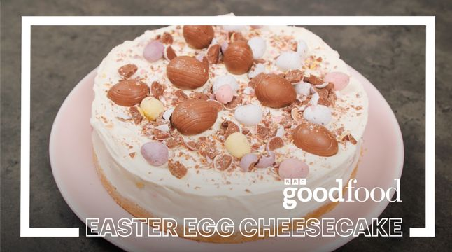

Mini Egg Cheesecake

Ingredients
- Vegetable Oil
- 200g Digestive Biscuits
- 80g Unsalted Butter
- 200g Mini Eggs
- 400g Full-Fat Soft Cheese
- 150g Icing Sugar
- 1 tsp Vanilla Bean Paste
- 400g Double Cream
Method
- Oil a 20cm deep springform cake tin and line with baking parchment. Tip the digestive biscuits into a food bag or the bowl of a food processor and crush or blitz to a fine crumb. Mix with the melted butter, then press into the base of the prepared cake tin and chill for 30 mins.
- Roughly chop half the Mini Eggs. Beat the soft cheese with the icing sugar and vanilla until just combined using an electric whisk. Clean the beaters, then beat the double cream to stiff peaks in a separate bowl. Gently fold the whipped cream into the soft cheese mixture along with the chopped Mini Eggs. Spoon the cheesecake mixture over the biscuit base, then smooth the surface with a palette knife or spatula. Chill overnight.
- The next day, carefully release the cheesecake from the tin (you may need to run a cutlery knife around the edge to loosen it) and top with the remaining whole Mini Eggs to decorate.
Home